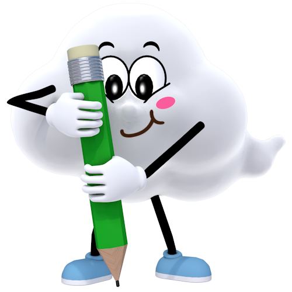

-
산과 염기를 혼합하면 산의 수소 이온(H+)과 염기의 수산화 이온(OH-)이
1:1의
개수비로 반응해 물(H2O)이 되는 중화 반응이 일어난다. -
산과 염기를 혼합하면 온도가 높아지는 것은 중화 반응이 일어날
때 중화열이
발생하기 때문이다.
H + 수소 이온 + OH - 수산화 이온 → H 2 O 물
염산(HCl) 수용액
수산화 나트륨(NaOH) 수용액
혼합 용액
-
농도와 온도가 같은 염산과 수산화 나트륨 수용액이 1:1의
부피비로 중화 반응을 할 때
최고 온도가 가장 높고, 혼합 용액은 중성을 띤다.
반응하지 않은 수산화 이온(OH-)이
남아 있으므로 염기성을 띤다.
남아 있으므로 염기성을 띤다.
수소 이온(H+)과
수산화 이온(OH-)이
모두 반응했으므로 중성을 띤다.
모두 반응했으므로 중성을 띤다.
반응하지 않은 수소 이온(H+)이
남아 있으므로 산성을 띤다.
남아 있으므로 산성을 띤다.
염기성
염기성
중성
산성
산성
2
4
6
8
10
HCl(mL)
10
8
6
4
2
NaOH(mL)
